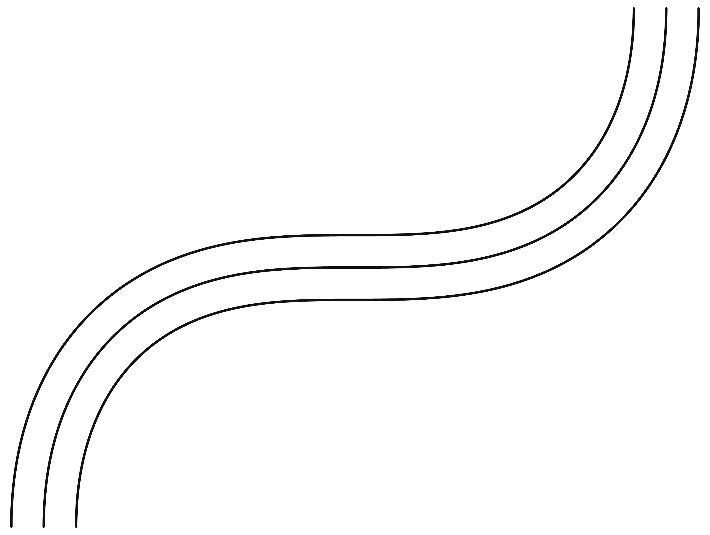
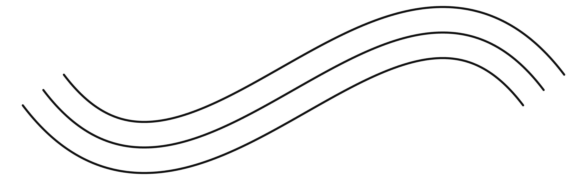
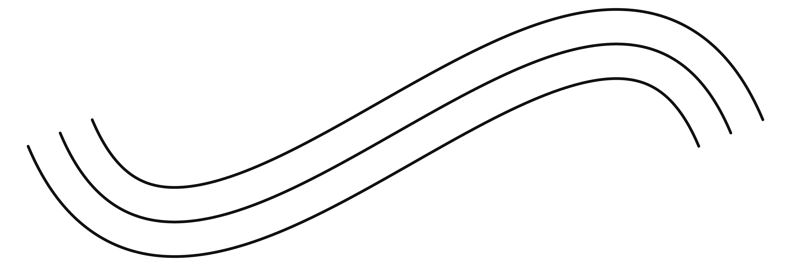
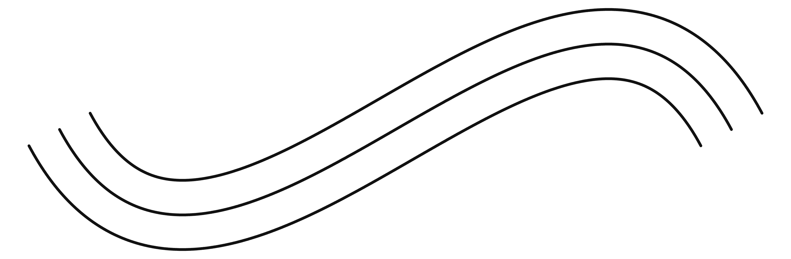
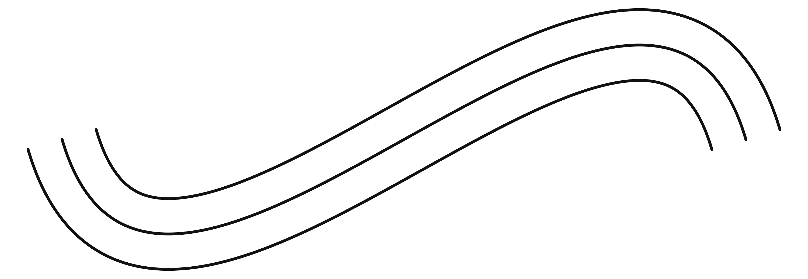
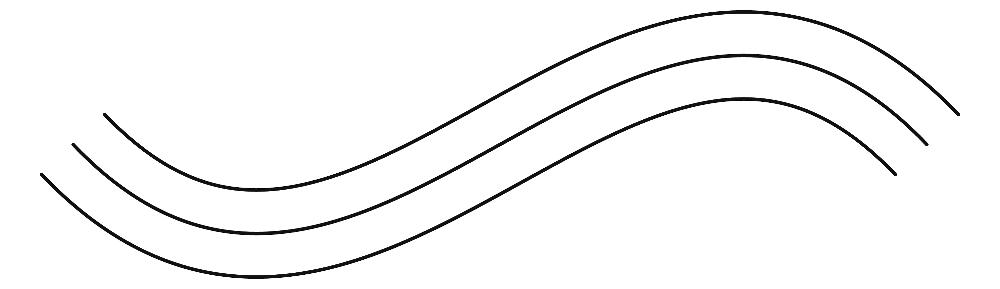

Book plates — temporary export
6 plates · white ground, no text on the image,
tight to the curve · labels outside the image, two columns · names are
<descriptor>-<variant>-t-exp-c-<serial>

symmetric PH S · exact rail

3-4-5 integer cubic · rail from the true normal

5-12-13 integer cubic

8-15-17 integer cubic

7-24-25 integer cubic

20-21-29 integer cubic · symmetric, rails clear of the curve